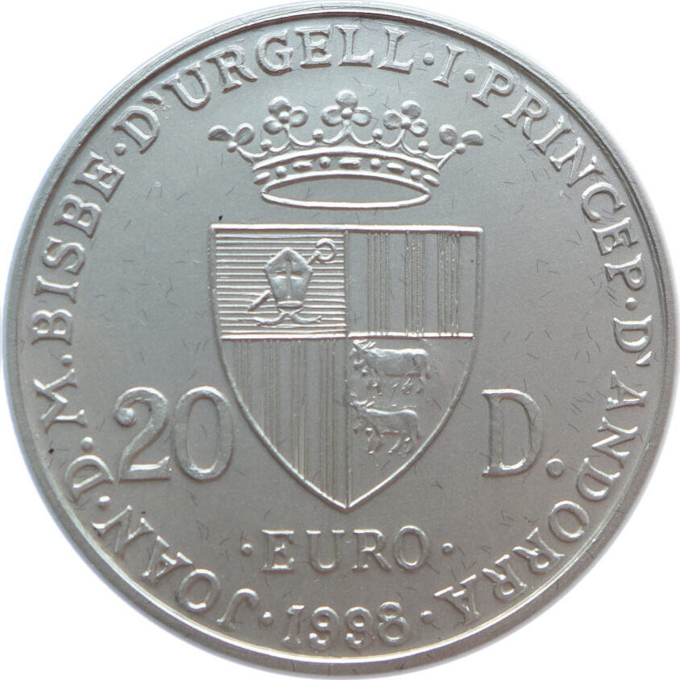
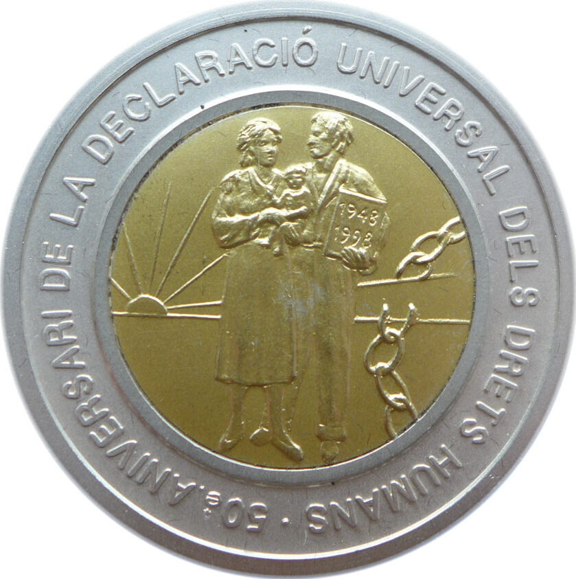
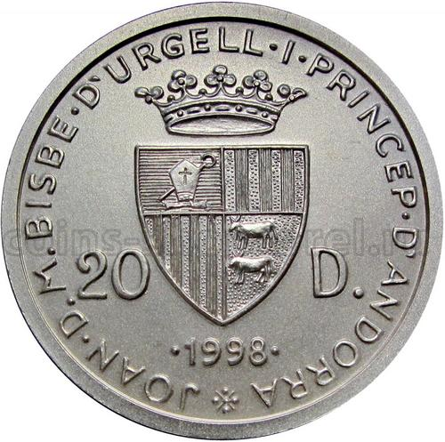
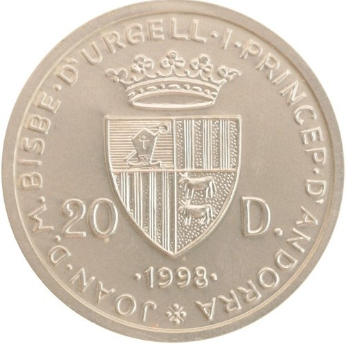
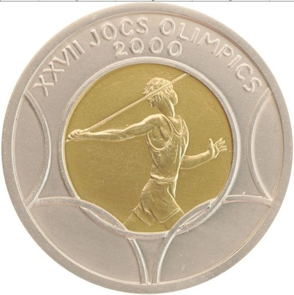
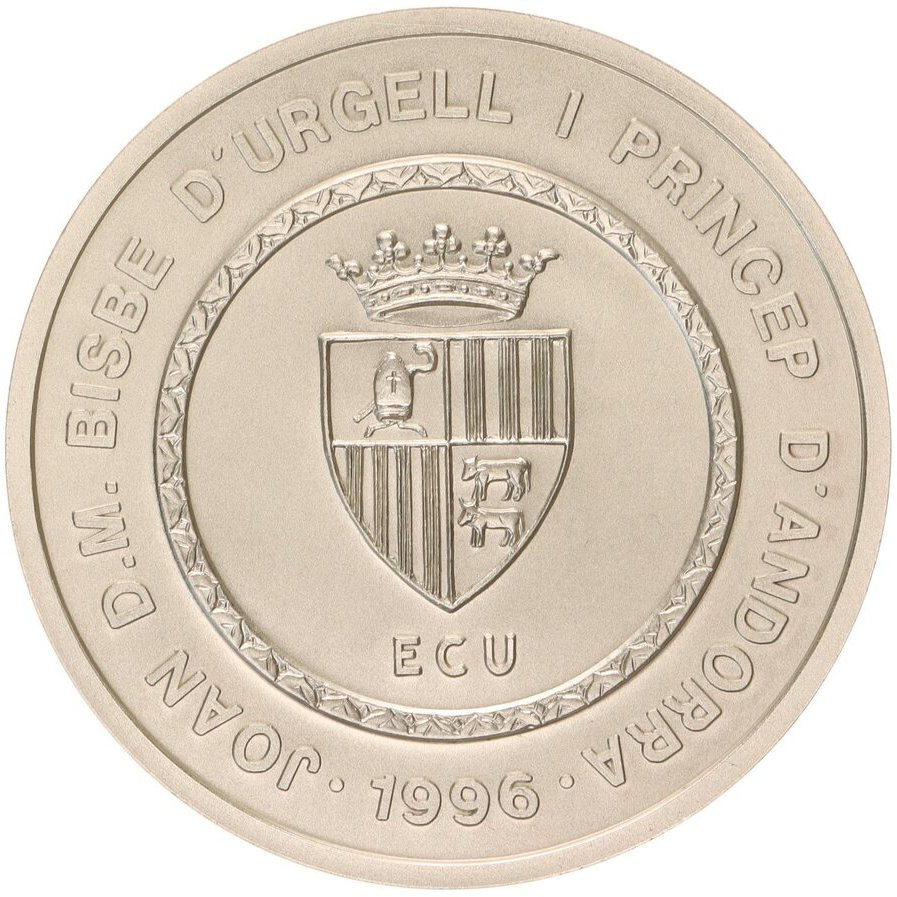
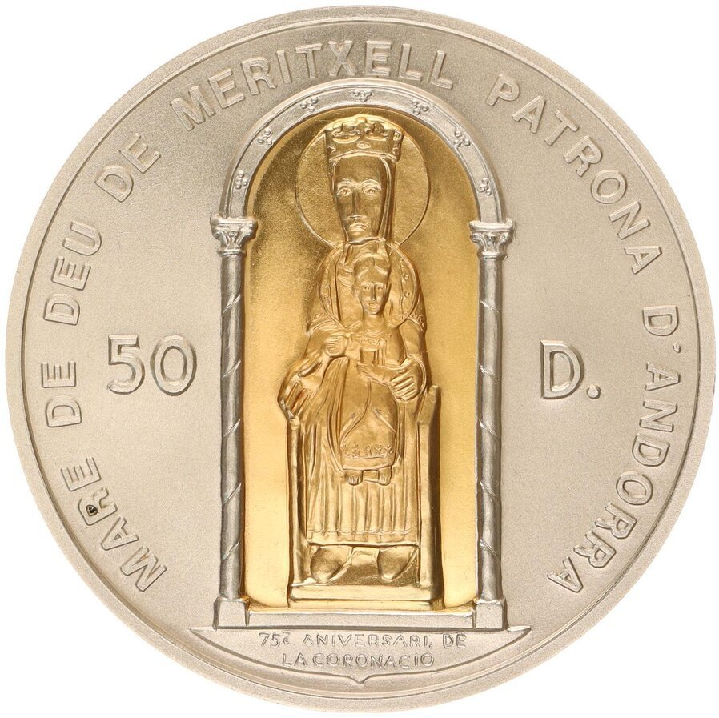
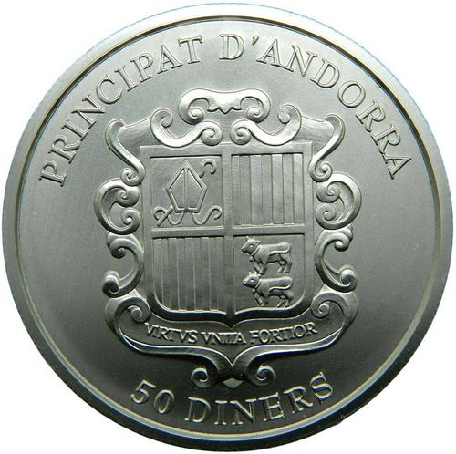
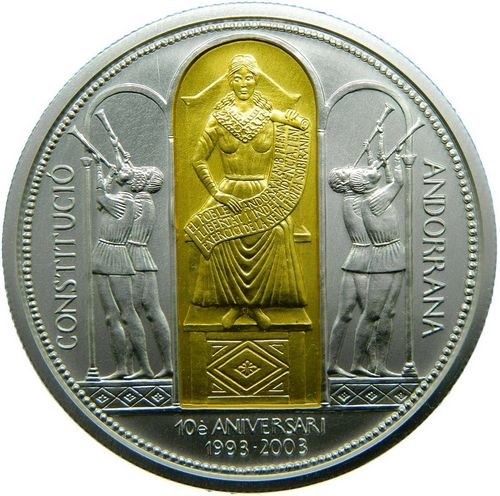

__________________________________________________________________________
| |
| |
| Андорра 20 динеров | 1996 Коронация | Андорра 20 динеров | 1991 Карл I Великий |
| Карла Великого | |||
| |
| |
| Андорра 20 динеров | 1993 Святой Георгий | Андорра 20 динеров | 1995 |
| Рамон Беренгер III | Граф Барселоны | ||
| |
| |
| Андорра 20 динеров | 1994 Король Петр III | Андорра 20 динеров | 1997 Римский договор |
| Арагонский Педро III | 40 лет Евро |
__________________________________________________________________________
|  |  |  |  |
||
| Андорра 20 динеров | 1998 50-летие | Андорра 20 динеров | 1998 Бег на 1500 метров | ||
| Всеобщей декларации | прав человека | ||||
| Andorra 20 Diners 1998 | Allgemeine Erklärung | ||||
| der Menschenrechte | |||||
| 1.5gAu917 1.3755g | 25gAg925 23.125g (26.5г) | ||||
| . | . | ||||
|  |  |
 |  | ||
| Андорра 20 динеров | 1998 Метание диска | Андорра 20 динеров | 1999 Бег на 400 метров | ||
|  |  |  | | ||
| Андорра 20 динеров | 1998 Метание копья |
__________________________________________________________________________
 |  |
| |
| Андорра 20 динеров | 1999 Прыжок в высоту | Андорра 20 динеров | 1999 Толкание ядра |
__________________________________________________________________________
.jpg) |  |
| Андорра 50 динеров 1994 | Новая конституция |
| (67.5mm) | 3.6gAu917 3.3012g 155.51gAg925 143.84675g (159.11г) |
__________________________________________________________________________
|  |  |
| Андорра 50 динеров 1996 (65mm) | Au 2.5g, 5oztAg925 =143.8375g |
|  |  |
| Андорра 50 динеров 2003 (65mm) | Au 999 4g, Ag 999 155.5g (159.5g) |
__________________________________________________________________________
 |  |
 |  |
| 3 Рубля 2004 300-летие | денежной реформы Петра I; | 3 Рубля 2006 150-летие | Третьяковской галереи |
 |  |
 |  |
| 3 Рубля 2008 150-летие | первой почтовой марки; | 3 Рубля 2009 | Покровский собор, г. Воронеж |
__________________________________________________________________________
 |  |
| 25 рублей 2004 | 300-летие денежной реформы Петра I |
 |  |
| 25 рублей 2006 150-летие | основания Государственной Третьяковской галереи |
__________________________________________________________________________
 |  |
| 25 рублей 2008 190-летие | Федерального государственного унитарного предприятия "Гознак" |
 |  |
| 25 рублей 2011 Год итальянской | культуры и итальянского языка в России |
| и Год российской культуры и русского языка в Италии |